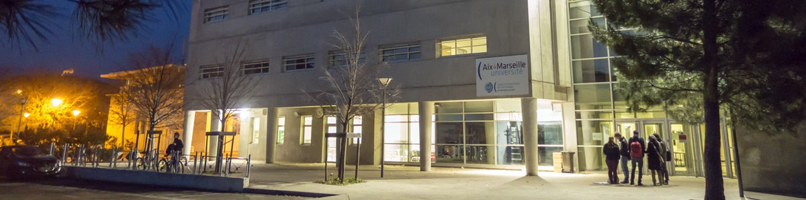

Aux portes de la Camargue, Arles est le centre international de la culture et de la photographie. Une opportunité saisie par l'IUT qui propose des formations tournées vers les métiers de l'informatique, du multimédia et de l'image dans des locaux modernes et proches du centre ville. Pôle universitaire de 1400 étudiants répartis dans plus de 20 formations d'enseignement supérieur, publiques et privées, Arles est inscrite au patrimoine mondial de l'humanité et offre un environnement naturel, culturel et humain exceptionnel.